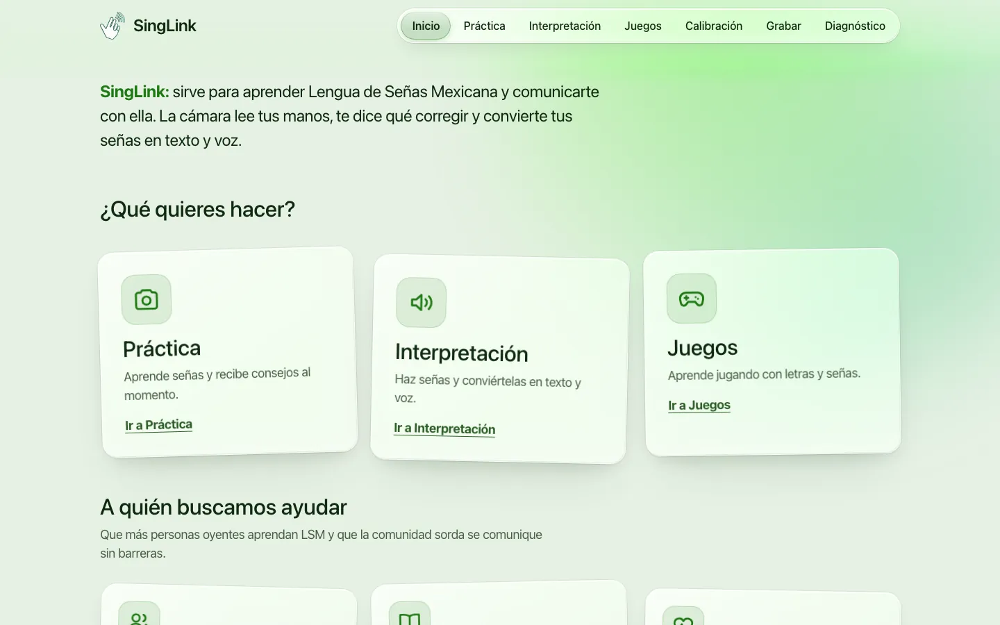
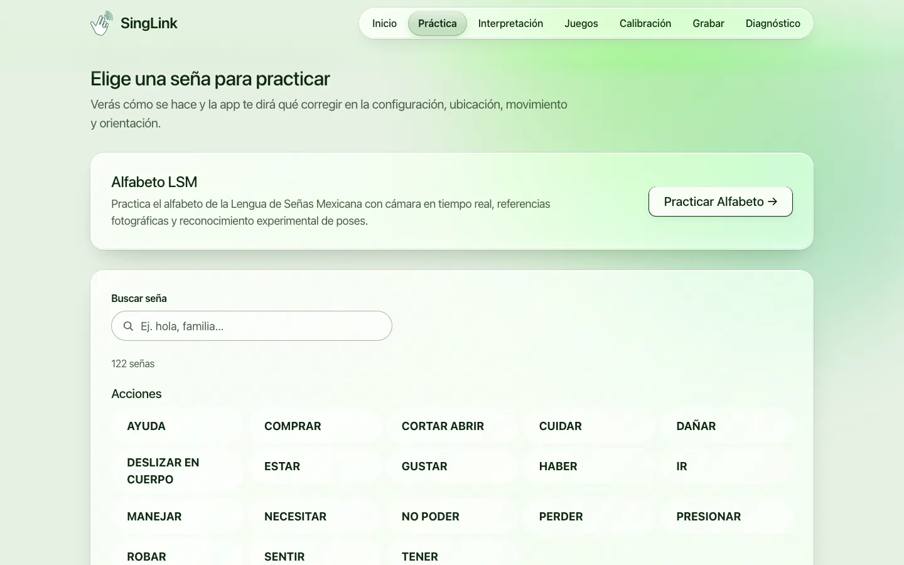
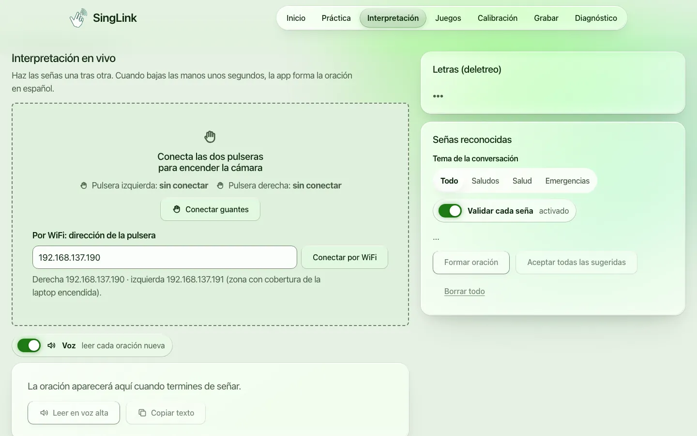
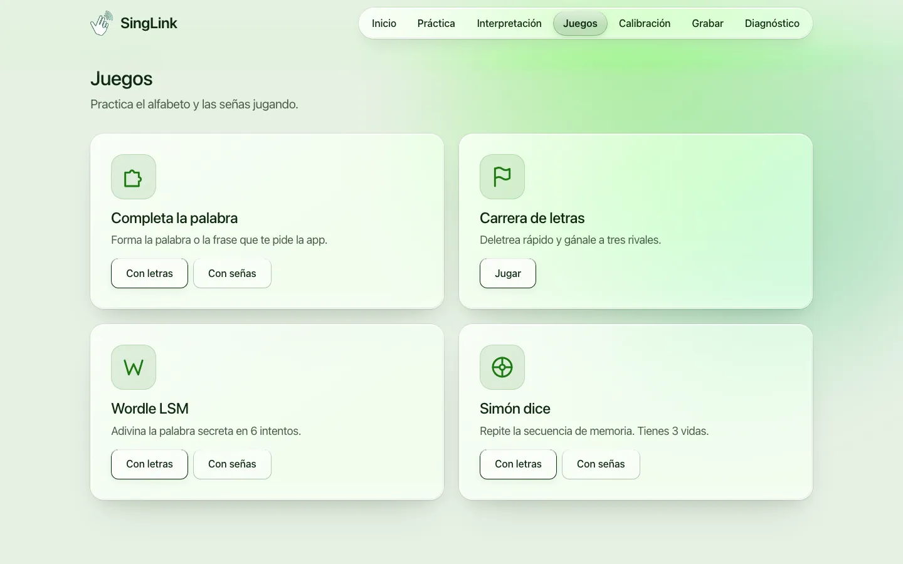

SingLink
En equipo · INDIVISA INGENIUM 2026, La Salle Oaxaca
Enseña y traduce Lengua de Señas Mexicana en tiempo real: la cámara lee tus manos, te dice qué corregir y convierte las señas en texto. También funciona con guantes propios con sensores y ESP32.
React · MediaPipe · FastAPI · PyTorch · ESP32
Código en GitHub